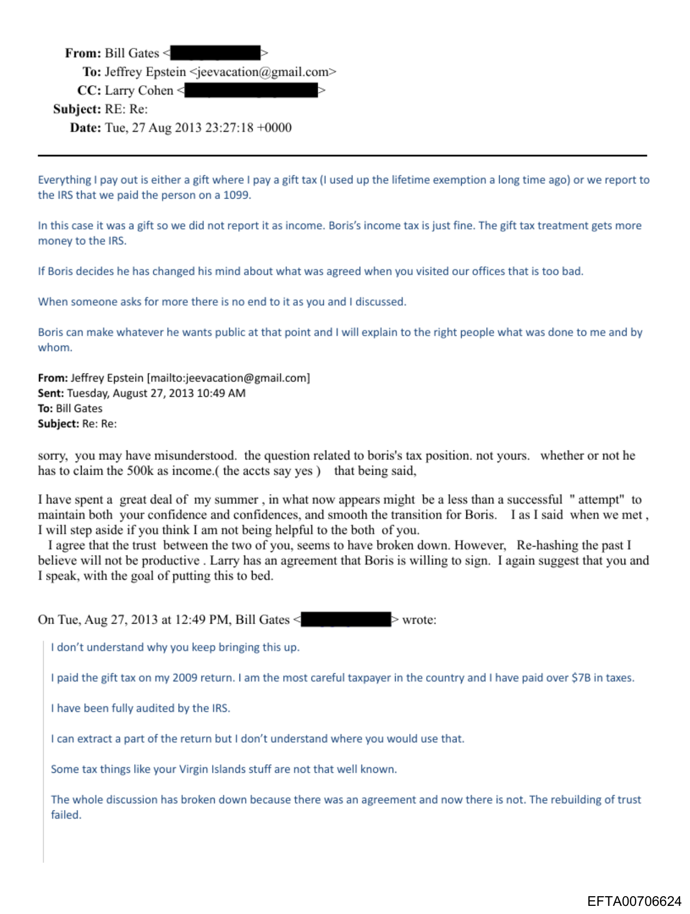

Epstein file trail
Gates, Falconwood and Harvard: Two Trails Tell 1 Story.
The files map two connected questions in the same Epstein orbit: one follows Gates, Boris Nikolic, and a proposed Yuri/LST fund structure; the other follows Harvard/Falconwood records carrying Gates-related language. The records point into one disclosure story, but the hard documents split into two trails.


Two reports
The release is one story, but the documents read cleanest in two files.
Gates-Boris-Yuri
A 2013 trail moves from tax-documentation dispute language to a proposed side agreement/addendum involving a Yuri/LST fund interest.
Open the money/document trail Trail TwoFalconwood-Harvard
A separate trail runs through a Harvard PED/Fund 347150 template record carrying Gates-related language and a $2,000,000 draft-letter context.
Open the Harvard/Falconwood trailsource PDFs
rendered pages
ledgered items
separate reports
Files